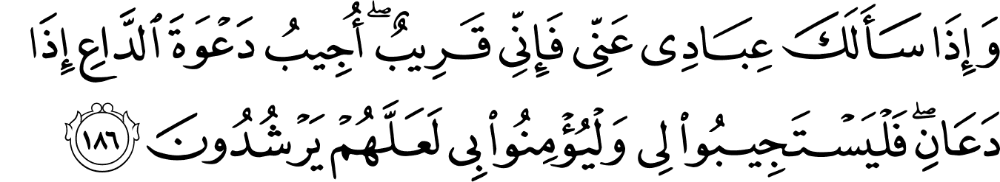

কু’রআনের সবচেয়ে সুন্দর আয়াতগুলোর মধ্যে একটি হচ্ছে সুরাহ আল-বাক্বারাহ’র ১৮৬ আয়াতটি। এই আয়াতে আল্লাহ تعالى আমাদেরকে বলবেন তিনি আমাদের কত কাছের, আমাদের কাছ থেকে তিনি কত আশা করেন যে আমরা শুধুই তাঁকেই تعالى ডাকি—
{kind=link}
আমার বান্দারা যখন তোমাকে আমার ব্যাপারে জিজ্ঞেস করে: অবশ্যই আমি তো সবসময় কাছেই আছি। আমাকে যে ডাকে আমি তার ডাকেই সাড়া দেই, যখনি সে ডাকে। তাহলে তারাও যেন আমার ডাকে সাড়া দিতে চেষ্টা করে, আমার উপর বিশ্বাস রাখে, যেন তারা সঠিক পথে চলতে পারে। [আল-বাক্বারাহ ১৮৬]
{kind=link}
এখানে আল্লাহ تعالى শুরু করছেন, “যখন আমার বান্দারা আমাকে ডাকে।” তিনি বলেননি ‘যদি’ আমার বান্দারা আমাকে ডাকে। বরং তিনি تعالى বলেছেন ‘যখন’ আমার বান্দারা আমাকে ডাকে। আল্লাহ تعالى যেন আমাদের জন্য অপেক্ষা করছেন: কখন আমরা তাঁকে ডাকবো? তিনি تعالى তো আমাদের ডাকে সারা দেওয়ার জন্য সবসময়ই আছেন। আমরাই বরং তাঁর تعالى সাথে কথা বলছি না।[১] আমরা গিয়ে অফিসের বসের কাছে অন্যায় তদবির করছি প্রমোশনের জন্য। আত্মীয়ের কাছে গিয়ে অন্যায় সুপারিশ চাচ্ছি চাকরির জন্য। পিরের কাছে গিয়ে হাজার টাকার দক্ষিণা দিয়ে সন্তান চাচ্ছি। মন্ত্রীর কাছে গিয়ে সরকারি প্রজেক্টের কন্ট্রাক্টের জন্য দরাদরি করছি। ডাক্তারের কাছে আর্তনাদ করছি, “ও ডাক্তার! ওকে বাঁচান! আপনি ছাড়া আর কেউ ওকে বাঁচাতে পারবে না।” —আমরা এদেরকে যেই ক্ষমতা দিচ্ছি, সেই ক্ষমতা তাদের নেই। তারপরেও তাদের কাছে আমরা কত অনুনয় বিনয় করছি। অথচ যিনি একমাত্র দেওয়ার ক্ষমতা রাখেন, তাঁকেই تعالى আমরা ডাকছি না।
بَلْ إِيَّاهُ تَدْعُونَ فَيَكْشِفُ مَا تَدْعُونَ إِلَيْهِ إِن شَآءَ وَتَنسَوْنَ مَا تُشْرِكُونَ
না! তোমরা শুধুমাত্র তাঁকেই ডাকো। তাহলে তিনি তোমাদেরকে সেই পরিস্থিতি থেকে বের করে আনবেন, যা তোমাদেরকে তাঁকে ডাকতে বাধ্য করেছে, যদি তিনি তা ইচ্ছা করেন। আর তখনি তোমরা ওদেরকে ভুলে যাবে, যাদেরকে তোমরা তাঁর জায়গা দিয়ে দিয়েছিলে। [আল-আনআম ৬:৪১]
অবশ্যই, আমি তো সময় কাছেই আছি
আল্লাহ تعالى সবসময় আমাদের কাছেই আছেন, কিন্তু আমরা তাঁর এবং আমাদের মধ্যে নানা ধরনের দেওয়াল তৈরি করেছি। আমরা মনে করি সরাসরি আল্লাহর تعالى কাছে চাইলে হবে না, একটা তাবিজ পড়তে হবে, গলায় সূরার ফলক ঝুলাতে হবে। ইমাম ভাড়া করে এনে তিনদিনে ভর ভর করে কু’রআন খতম দিয়ে তারপরে চাইতে হবে, এর আগে চাইলে হবে না। মাওলানার দরবারে গিয়ে আর্জি পেশ করতে হবে, শুধু নামাজে দু’আ করলে হবে না। মসজিদের ইমামকে দিয়ে বলাতে হবে, আমি নিজে বললে হবে না, কারণ আমার অনেক পাপ। —এভাবে আমরা নিজেরাই আল্লাহকে تعالى ঠেলে দূরে সরিয়ে দিয়েছি। আমাদের জীবনে আল্লাহ تعالى আর প্রতি মুহূর্তের সাথী নন। বরং বছরে একদিন সারা রাত নফল নামাজেই শুধুমাত্র তাঁকে কাছে মনে হয়। সপ্তাহে একদিন মসজিদে দশ মিনিটের জন্য তাঁকে আমরা কাছে মনে করি, আর বাকি দিনগুলো তাঁকে এড়িয়ে চলি।
ٱدْعُوا۟ رَبَّكُمْ تَضَرُّعًا وَخُفْيَةً
তোমাদের প্রভুকে ডাকো বিনম্র হয়ে, একান্ত গোপনে। [আল-আ’রাফ ৭:৫৫]
এভাবে আল্লাহর تعالى সাথে আমরা নিজেরাই একধরনের কৃত্রিম সম্পর্ক তৈরি করেছি। এই কৃত্রিম সম্পর্কের কারণে আল্লাহ تعالى আর আমাদের সুখ-দুঃখের সাথী নন। বরং বড় ধরনের বিপদে পড়লেই শুধুমাত্র তাঁর কথা মনে হয়। অথচ আল্লাহ تعالى এই আয়াতে আমাদেরকে বলছেন, “অবশ্যই” তিনি সবসময় আমাদের কাছেই আছেন। তিনি কখনোই আমাদের থেকে দূরে চলে যান না। আমরা যেন বিনম্র হয়ে একান্ত গোপনে আল্লাহর تعالى কাছে চাই।
আয়াতটি কিন্তু এমন নয় যে, “আমার বান্দারা যখন তোমাকে আমার ব্যাপারে জিজ্ঞেস করে, ‘তাদেরকে বলে দাও যে’, আমি সবসময়ই কাছেই আছি।” এখানে বান্দারা জিজ্ঞেস করছেন রাসুলকে عليه السلام। কিন্তু আল্লাহ تعالى রাসুলকে عليه السلام উত্তর দিতে না বলে, নিজে থেকেই তাঁর বান্দাদেরকে উত্তর দিচ্ছেন। শুধু তাই না, এই আয়াতে তিনি বার ‘আমি’ বলছেন— “আমার বান্দারা”, “আমার ব্যাপারে”, “আমি কাছেই”। কু’রআনে এটা বিরল। কু’রআনে সাধারণত আল্লাহ تعالى তাঁর সম্মান বজায় রেখে আরবিতে “আমরা” (হিন্দি বা উর্দুতে ‘হাম’) ব্যবহার করেন। এটি তাঁর সম্মান এবং দূরত্ব দুটোই নির্দেশ করে। কিন্তু এই আয়াতে তিনি তাঁর বান্দাদের নিজে থেকে উত্তর দিচ্ছেন। বিরল ‘আমি’ শব্দটি বার বার ব্যবহার করছেন, যেন আমরা উপলব্ধি করি যে, আমাদেরকে তিনি تعالى কত কাছের মনে করেন, তিনি تعالى আমাদেরকে কত ভালবাসেন, তিনি تعالى কত আশা করেন যে, আমরা যেন সরাসরি তাঁর কাছেই চাই।
আমাকে যে ডাকে আমি তার ডাকেই সাড়া দেই, যখনি সে ডাকে
অনেক সময় আমরা ভাবি: আল্লাহ تعالى কি আর আমার মতো পাপী বান্দার দু’আ শুনবেন? তিনি শুনবেন হাজি সাহেবের দু’আ, মসজিদের ইমামের দু’আ, মাওলানা, মুফতি সাহেবদের দু’আ। আমার মতো মামুলি বান্দার দু’আ তিনি কি শুনবেন? এই আয়াতে আল্লাহ تعالى বলছেন, যে-ই তাঁকে ডাকে, তিনি তার ডাকেই সাড়া দেন।
এখানে তিনি বিশেষভাবে বলছেন, ٱلدَّاعِ – অর্থাৎ যে তাঁকে ডাকছে, তাকে তিনি বিশেষভাবে চিহ্নিত করেছেন আদ-দাঈ অর্থাৎ আহ্বানকারী হিসেবে। তাঁর কাছে সে লক্ষ কোটি মানুষের ভিড়ে মামুলি কেউ একজন নয়। বরং সে বিশেষ একজন দাঈ। আমরা যখন আল্লাহকে تعالى ডাকি, তাঁর কাছে প্রার্থনা করি, তখন আল্লাহ تعالى লক্ষ কোটি মানুষের ভিড়েও আমাদের প্রত্যেককে বিশেষভাবে চিহ্নিত করেন। আমরা প্রত্যেকে তাঁর تعالى পুরো মনোযোগ পাই। তিনি تعالى একনিষ্ঠ হয়ে আমাদের প্রত্যেকের ডাক শোনেন।
আমরা অনেক সময় মনে করি, আল্লাহ تعالى এত বড় মহাবিশ্ব চালাচ্ছেন, কত কোটি কোটি সৃষ্টি তাঁর, তাঁর কি আর আমার কথা শোনার মতো সময় আছে? এধরনের চিন্তা মানুষের নির্বুদ্ধিতা বা সীমাবদ্ধতা ছাড়া কিছু নয়। আমরা মনে করছি যে, আল্লাহর تعالى মনোযোগ দেওয়ার ক্ষমতার একটা সীমা আছে। তিনি প্রতিটি মানুষকে ঠিক মতো ‘খেয়াল’ করতে পারেন না, বা তাঁর মনোযোগ কম-বেশি হয়। মুখে না বললেও, আমরা অনেকেই আমাদের চিন্তা, কাজের মধ্যে দিয়ে অনেক সময় দেখিয়ে দেই যে, আল্লাহ تعالى বোধহয় আমাকে এখন খেয়াল করছেন না, বা আমার দু’আ ঠিকমতো শুনছেন না। তখন আমরা তাঁকে ‘ঠিকমতো’ শোনানোর জন্য তাবিজ পড়ি, ঘরের দেওয়ালে সুরাহ ঝুলাই, হাজি, ইমাম, মাওলানা সাহেবের কাছে গিয়ে দু’আ করতে বলি। আল্লাহর تعالى সম্পর্কে কতই না অপমানজনক ধারণা আমাদের!
এই আয়াতে আরেকটি লক্ষ্য করার মতো ব্যাপার হলো, তিনি تعالى বলেননি, তিনি ‘মুসলিমদের’ ডাকে সাড়া দেন। বরং তিনি تعالى বলেছেন, যে-ই তাঁকে ডাকে, তিনি তারই ডাকে সাড়া দেন। তিনি تعالى মুসলিম, অমুসলিম সবার রাব্ব। সবাইকে তিনি تعالى ভালবাসেন, সবার যত্ন নেন, সবার প্রভু তিনি। সবার ডাকে তিনি تعالى সাড়া দেন।[১] আমরা অনেক সময় প্রশ্ন করি, আল্লাহ تعالى কেন অমুসলিমদের এত কিছু দেন? কেন তিনি অমুসলিমদের সমস্যার সমাধান করে দেন? অমুসলিমরা প্রার্থনা করে যা চায়, সেটা পেয়ে যায় কীভাবে, যদি তারা আল্লাহরই تعالى ইবাদত না করে? —এর উত্তর রয়েছে এই আয়াতে। যে-ই তাঁকে تعالى ডাকে, যখনি ডাকে, তিনি تعالى তারই ডাকে সাড়া দেন।
যখনি সে ডাকে
এখানে আল্লাহ تعالى বিশেষভাবে বলছেন, তাঁকে ডাকার জন্য কোনো উপলক্ষ দরকার নেই। তিনি تعالى মানুষের ডাকে সবসময় সাড়া দেন। শুক্রবারে জুমুআহ’য় তাঁকে تعالى ডাকলে তিনি সাড়া দেন, শনিবারে রাতে ডাকলেও তিনি সাড়া দেন। অন্যান্য ধর্মের মতো তিনি تعالى আমাদের কাছে শুধু বিশেষ কিছু মুহূর্তে উপস্থিত থাকেন না। আমাদের জন্য তাঁর দরজা সবসময় খোলা। আমরা যেন কখনোই এমনটা না ভাবি যে, আমার একটা জরুরি দরকারে আল্লাহর تعالى কাছে দু’আ করা দরকার, শবে বরাত আসুক, তখন করবো, এর আগে করলে খুব একটা লাভ হবে না। সেদিন পর্যন্ত আমরা বাঁচবো তার কোনো নিশ্চয়তা নেই। একারণেই যে কোনো সময় দু’আ করতে আল্লাহ تعالى বলেছেন। তিনি تعالى আয়াতটি “যে-ই আমাকে ডাকে, তার ডাকেই আমি সাড়া দেই” বলেই শেষ করে দিতে পারতেন। তা না করে তিনি تعالى বিশেষভাবে যোগ করেছেন, “যখনি সে ডাকে”।[১]
তাহলে তারাও যেন আমার ডাকে সাড়া দিতে চেষ্টা করে
আল্লাহ تعالى আমাদের ডাকে সাড়া দেবেন কিনা, তাঁর জন্য তিনি আমাদেরকে একটা শর্ত দিয়ে দিয়েছেন: আমাদেরকে তাঁর কথা শুনতে হবে। কোটি টাকার ঘুষ খেয়ে, হারাম টাকায় হাজ্জে গিয়ে চোখের পানি নাকের পানি একাকার করে আল্লাহ تعالى কাছে চাইলে, সেটা তাঁর ডাকে সাড়া দেওয়া হলো না। দিনে পাঁচ ওয়াক্তের মধ্যে এক ওয়াক্ত নামাজ না পড়ে, শুধু শুক্রবার জুমুআহ’য় গিয়ে হাত তুললে, তাঁর ডাকে সাড়া দেওয়া হলো না। গরিব আত্মীয়স্বজনদের কোনো খবর না রেখে, এলাকার এতিমদের জন্য কিছু না করে, সারাদিন নিজের ব্যবসার জন্য দু’আ করলে, তাঁর ডাকে সাড়া দেওয়া হলো না। আমাদেরকে তাঁর تعالى ডাকে সাড়া দিতে হবে। তবেই তিনি تعالى আমাদের ডাকে সাড়া দেবেন বলে কথা দিয়েছেন। তাঁর تعالى ডাকে সাড়া দেওয়া মানে হচ্ছে তাঁর আদেশ-নিষেধ মানা, ইসলাম অনুসারে জীবন পার করা।[১২][১৪]
وَقَالَ رَبُّكُمُ ٱدْعُونِىٓ أَسْتَجِبْ لَكُمْ ۚ إِنَّ ٱلَّذِينَ يَسْتَكْبِرُونَ عَنْ عِبَادَتِى سَيَدْخُلُونَ جَهَنَّمَ دَاخِرِينَ
তোমাদের প্রভু বলেন, “আমাকে ডাকো, আমি তোমাদের ডাকে সাড়া দেবো। সাবধান! যারা তাদের অহংকারের কারণে আমাকে ডাকে না, তারা অবশ্যই জাহান্নামে অপমানিত হয়ে প্রবেশ করবে।” [গাফির ৪০:৬০]
আল-বাক্বারাহ’র আলোচ্য এই আয়াতে আল্লাহ تعالى যদি বলতেন, “তাহলে তারা যেন আমার ডাকে সাড়া দেয়” — তাহলে সর্বনাশ হয়ে যেত। আমরা তখন আর তাঁর কাছে কিছু চেয়ে পাওয়ার আশা আর করতে পারতাম না, কারণ আমরা প্রত্যেকেই আমাদের জীবনে বহুবার তাঁর কথা শুনিনি। বহুবার তাঁর অবাধ্য হয়েছি। আমাদের কথা, কাজ, চিন্তার মাধ্যমে বহুবার তাঁর অপমান করেছি। — বরং তিনি এই আয়াতে বলেছেন, فَلْيَسْتَجِيبُوا۟ لِى অর্থাৎ সাড়া দিতে ‘চেষ্টা’ যেন করে। আমরা যেন অন্তত আন্তরিক চেষ্টাটা করি তাঁর কথা শোনার। আমাদের চেষ্টাটাই যথেষ্ট তাঁর কাছে। তাহলেই তিনি تعالى আমাদের ডাকে সাড়া দেবেন।[১] আর কোনো শর্ত তিনি আমাদেরকে দেননি। তাঁর কাছে চাওয়াটা তিনি আমাদের জন্য কত সহজ করে দিয়েছেন। তারপরেও আমরা কোনো কিছু দরকার হলে তাঁর কাছে হাত তুলে দু’আ করি না, বরং অন্য কারো বা কিছুর কাছে ধর্না দেই।
আমার উপর বিশ্বাস রাখে
এই অংশটুকু গুরুত্বপূর্ণ। আল্লাহ تعالى বলছেন, যদি আমরা তাঁর تعالى সাড়া পাওয়ার আশা রাখি, তাহলে আমরা যেন তাঁর প্রতি বিশ্বাস রাখি যে, তিনি অবশ্যই আমাদের জন্য যা ভালো, সেটাই তিনি আমদেরকে দেবেন। অনেকেই কয়েকদিন দু’আ করে হতাশ হয়ে অভিযোগ করেন, “আল্লাহর تعالى কাছে কতই তো চাইলাম। কই? কিছুই তো পেলাম না?” অনেকে চাকরির জন্য কয়েক বছর দু’আ করে হতাশ হয়ে দু’আ করা ছেড়ে দেন। অনেকে বিয়ের জন্য সুযোগ্য পাত্র-পাত্রীর জন্য দু’আ করতে করতে হতাশ হয়ে যান। অনেকে ব্যবসা ভালো হওয়ার জন্য দু’আ করে ফল না পেয়ে আশা ছেড়ে দেন। —এগুলো হচ্ছে ঈমানের পরীক্ষা। যেদিন আমরা আল্লাহর تعالى কাছে দু’আ করে আশা ছেড়ে দেই, অভিযোগ করি, সেই দিন আমরা ঈমানের পরীক্ষায় হেরে যাই। আমাদের আল্লাহর تعالى উপর আসলে দৃঢ় বিশ্বাস ছিল না যে, তিনি সত্যিই আমাদেরকে দেবেন, বা আমার জন্য যেটা সবচেয়ে ভালো, সেটাই তিনি تعالى দেবেন। সত্যিই যদি বিশ্বাস থাকতো, তাহলে আমরা কোনোদিন অভিযোগ করতাম না। আমাদের অভিযোগই আমাদের ঈমানের শূন্যতা প্রকাশ করে দেয়।
অনেক সময় আমরা ঠিক যা চাই, সেটাই না পেলে মনে করি যে, আল্লাহ تعالى আমাদের দু’আ শুনছেন না। আল্লাহ تعالى তিনভাবে আমাদের দু’আর উত্তর দেন[১২][১৪]—
- ১) আমরা যা চাই ঠিক সেটা দুনিয়াতে দিয়ে।
- ২) আমরা যা চাই সেটাতে আমাদের কল্যাণ না থাকলে, তার থেকে ভালো কিছু দিয়ে।
- ৩) দুনিয়াতে না দিয়ে আখিরাতে প্রতিদান দিয়ে, সেটা সমপরিমাণ গুনাহ মাফ করে দিয়ে হলেও।
সুতরাং আমরা যখন কোনো কিছু চেয়েও পাই না, আমাদের এই বিশ্বাস রাখতে হবে যে, আল্লাহ تعالى ঠিকই শুনেছেন আমাদের চাওয়া। কিন্তু তিনি অন্য কিছু দিয়ে আমাদের চাওয়ার উত্তর দিয়েছেন। সেটা হয়তো দুনিয়ার জীবনেই দিয়েছেন, যা আমি ভালো করে ভেবে দেখিনি দেখে এখনো উপলব্ধি করিনি। অথবা তিনি এর প্রতিদান আমাকে আখিরাতে দেবেন বলে সিদ্ধান্ত নিয়েছেন। আমি যা চেয়েছি, তার বিনিময়ে আমি কিছু না কিছু পাবোই, যদি তিনি ইচ্ছা করেন।
যেমন, কেউ একজন অনেক দু’আ করছে: তার যেন চাকরিতে প্রমোশন হয়। এর জন্য সে সবরকম চেষ্টাও করেছে। ঠিকমতো নামাজ, রোজা, যাকাত আদায় করেছে। চেষ্টা করেছে কু’রআন অনুসারে নিজের জীবন চালানোর। একইসাথে চাকরিতে যথাসাধ্য নিষ্ঠার সাথে কাজ করেছে, যেন তার পারফরমেন্স নিয়ে কোনো অভিযোগ না থাকে। কিন্তু তারপরেও তার প্রমোশন না হয়ে, তার এক শত্রু কলিগের প্রমোশন হলো। তার উপর দেখা গেল তার স্ত্রী গর্ভবতী হয়ে গেলেন। এত বড় বাড়তি খরচ কীভাবে চালাবেন, সেই দুশ্চিন্তায় তার রাতে ঘুম হয় না।
এই ধরনের পরিস্থিতে পড়ে অনেকেই আল্লাহর تعالى উপর আশা হারিয়ে ফেলেন। তখন তারা ভেবে দেখেন না যে, সেই প্রমোশনটা হলে তাকে প্রতিদিন সকাল সাতটা থেকে রাত নয়টা পর্যন্ত অফিসের পেছনে ছুটতে হতো। অতিরিক্ত দায়িত্ব কাঁধে নিয়ে প্রায়ই নামাজ ছুটে যেত। পরিবারের সাথে সময় দিতে পারতেন না। তার ছেলে মেয়েগুলো উচ্ছন্নে যেত। উপরের পদে নানা ধরনের অন্যায় সিদ্ধান্ত নিতে হতো। যার কারণে তার আয় হারাম হয়ে যেত। বিশাল পরিমাণের হারাম সম্পত্তি নিয়ে চাকুরী জীবন শেষ করতে হতো।
এই সব ক্ষতি থেকে আল্লাহ تعالى তাকে বাঁচালেন তার দু’আর উত্তরে চাকরিতে প্রমোশন না দিয়ে। দেখা গেল তার সন্তানদের সে বছর কোনো অসুখই হলো না। তার স্ত্রীর ডেলিভারিতে কোনো বাড়তি খরচ হলো না। বাড়ির দেওয়ালের আস্তর খসে পড়ে মেরামতে হাজার হাজার টাকার খরচ করতে হলো না। শুধু তাই না, তার যেই সন্তানটি হলো, সেই সন্তান বড় হয়ে বিপুল হালাল সম্পত্তির মালিক হয়ে বাবা-মাকে নিয়ে সুখে শান্তিতে বাস করতে লাগল। সেই সন্তানকে নিয়ে বাবা-মার সে কী গর্ব! এই সব কিছু সে পেল তার দু’আর উত্তর হিসেবে। সে আসলে যা চেয়েছিল: জীবনে সচ্ছলতা, সম্মান, শান্তি —সেই আসল চাওয়া আল্লাহ تعالى তাকে ঠিকই দিলেন, কিন্তু অন্যভাবে। এমন ভাবে দিলেন, যেটা তার জন্য সবচেয়ে ভালো হলো। চাকরিতে প্রমোশন তাকে এগুলো এনে দিত না।
কিন্তু আফসোস, চাকরিতে প্রমোশনের দু’আ কবুল না হওয়ায় সে এসবের কিছুই বুঝলো না, বোঝার চেষ্টাও করলো না।
যেন তারা সঠিক পথে চলতে পারে
এই হচ্ছে আসল পাওয়া। আল্লাহর تعالى কাছে আমাদের যত চাওয়া আছে, তার সবচেয়ে বড় পাওয়া হচ্ছে সঠিক পথে চলতে পারা। কারণ সঠিক পথের গন্তব্য হচ্ছে জান্নাত। যারা দুনিয়াতে সঠিক পথ খুঁজে পেয়েছে, তারা আল্লাহর تعالى অনুগ্রহে শেষ পর্যন্ত জান্নাতে গিয়ে পৌঁছুবে। জান্নাতে গিয়ে পৌঁছুলে সারাজীবনের যত চাওয়া, পাওয়া, ইচ্ছে ছিল, সব সেখানে মনে করা মাত্র এসে হাজির হবে। আর সবচেয়ে বড় পাওয়া হবে যে, সেখানে গিয়ে আমরা আল্লাহকে تعالى দেখতে পাবো। সারাজীবন যাকে না দেখে ডেকেছি, তাঁকে নিজের চোখে দেখতে পাবো। এরচেয়ে বড় পাওয়া আর কিছু হতে পারে না।
সুত্র:
- [১] নওমান আলি খানের সূরা আল-বাকারাহ এর উপর লেকচার এবং বাইয়িনাহ এর কু’রআনের তাফসীর।
- [২] ম্যাসেজ অফ দা কু’রআন — মুহাম্মাদ আসাদ।
- [৩] তাফহিমুল কু’রআন — মাওলানা মাওদুদি।
- [৪] মা’রিফুল কু’রআন — মুফতি শাফি উসমানী।
- [৫] মুহাম্মাদ মোহার আলি — A Word for Word Meaning of The Quran
- [৬] সৈয়দ কুতব — In the Shade of the Quran
- [৭] তাদাব্বুরে কু’রআন – আমিন আহসান ইসলাহি।
- [৮] তাফসিরে তাওযীহুল কু’রআন — মুফতি তাক্বি উসমানী।
- [৯] বায়ান আল কু’রআন — ড: ইসরার আহমেদ।
- [১০] তাফসীর উল কু’রআন — মাওলানা আব্দুল মাজিদ দারিয়াবাদি
- [১১] কু’রআন তাফসীর — আব্দুর রাহিম আস-সারানবি
- [১২] আত-তাবারি-এর তাফসীরের অনুবাদ।
- [১৩] তাফসির ইবন আব্বাস।
- [১৪] তাফসির আল কুরতুবি।
- [১৫] তাফসির আল জালালাইন।
- [১৬] লুঘাতুল কুরআন — গুলাম আহমেদ পারভেজ।